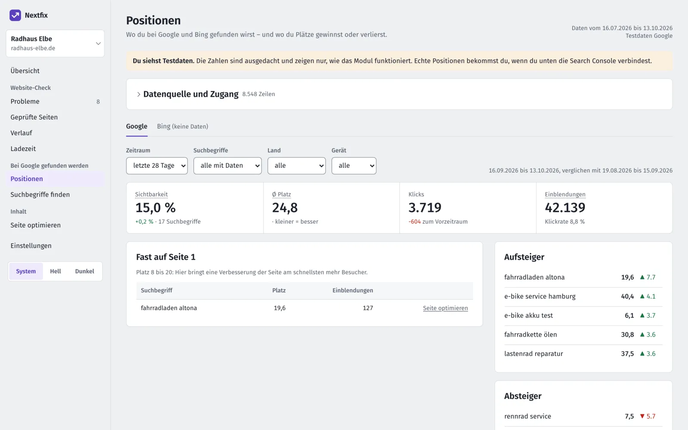

Nextfix installieren
Etwa zehn Minuten, einmal. Du brauchst Python 3.12 und das Terminal. Jeden Befehl kannst du kopieren.
Kein Terminal-Mensch? Schick den Link zu dieser Seite deinem Webbetreuer oder einer technikfesten Bekannten. Für sie sind das zehn Minuten. Danach bedienst du Nextfix ganz normal im Browser.
-
Python prüfen
Öffne das Programm Terminal (Mac: Programme, Dienstprogramme) und gib ein:
python3 --versionSteht dort 3.12 oder höher, geht es weiter. Sonst lädst du Python von python.org herunter und installierst es wie jedes andere Programm.
-
Nextfix herunterladen
Mit Git:
git clone https://github.com/the-neyro/nextfix.git cd nextfixOhne Git: Auf GitHub auf „Code“ und „Download ZIP“ klicken, entpacken und im Terminal mit
cdin den Ordner wechseln. Tipp:cdeintippen und den Ordner ins Terminalfenster ziehen. -
Einrichten
Diese drei Befehle legen eine eigene Python-Umgebung an, installieren, was Nextfix braucht, und laden einen Chromium-Browser für Ladezeit-Messung und PDF-Berichte:
Mac und Linux
python3 -m venv .venv .venv/bin/pip install -r requirements.txt .venv/bin/playwright install chromiumWindows (Eingabeaufforderung, noch nicht getestet)
py -3.12 -m venv .venv .venv\Scripts\pip install -r requirements.txt .venv\Scripts\playwright install chromiumDas dauert ein paar Minuten. Alles landet im Ordner von Nextfix, dein System bleibt unberührt.
-
Starten
Mac und Linux
.venv/bin/uvicorn app.web:appWindows (noch nicht getestet)
.venv\Scripts\uvicorn app.web:appDann öffnest du im Browser http://localhost:8000. Beenden: im Terminal
CtrlundCdrücken.Zum Merken: Für jeden weiteren Start öffnest du das Terminal, wechselst mit
cdin den Ordner von Nextfix und gibst denselben Befehl ein.
Unter localhost:8000 siehst du deine Projekte. -
Die erste Website prüfen
Leg ein Projekt mit der Adresse deiner Website an und klick auf „Website prüfen“. Bei einer kleinen Website dauert das ein paar Minuten. Danach siehst du den Website-Zustand und die Liste „Was jetzt tun“.

Das Ergebnis der ersten Prüfung, hier für die Demo-Website. 
Ein Klick auf eine Aufgabe zeigt, wie du sie behebst. Keine eigene Website zur Hand? Starte in einem zweiten Terminalfenster die Demo-Website „Radhaus Elbe“ und prüfe die Adresse http://127.0.0.1:8798/:
.venv/bin/python -m scripts.demo_website 8798
Hakt’s? Die häufigsten Stolpersteine
„command not found: python3“ oder eine Version unter 3.12
Python fehlt oder ist zu alt. Installier die aktuelle Version von python.org, schließ das Terminal und öffne es neu.
Der Mac will „Befehlszeilenentwickler-Tools“ installieren
Das passiert beim ersten git. Klick auf „Installieren“ und warte, oder nimm den Weg ohne Git über „Download ZIP“.
„No module named …“ oder „No such file or directory: .venv/bin/…“
Du bist nicht im Ordner von Nextfix, oder Schritt 3 ist nicht durchgelaufen. Wechsel mit cd in den Ordner und wiederhole Schritt 3.
„Address already in use“ beim Start
Ein anderes Programm nutzt schon Port 8000. Hänge --port 8001 an den Startbefehl an und öffne dann http://localhost:8001.
Nichts davon passt? Schreib ein Issue auf GitHub und kopier die Fehlermeldung aus dem Terminal hinein. Oder gib diese Seite deinem Webbetreuer.
Optional: Search Console, Bing und Open PageRank
Für Positionen verbindest du die Google Search Console oder die Bing Webmaster Tools. Die Anleitungen liegen im Repository: Search Console einrichten und Bing einrichten. Zugangsdaten liegen außerhalb des Projekts in ~/.config/seo-tool/.

Für die Domain-Autorität holst du dir einen kostenlosen Schlüssel bei Open PageRank und speicherst ihn als ~/.config/seo-tool/openpagerank-api-key.txt.
Optional: mit Claude bedienen
Nextfix bringt einen MCP-Server mit 50 Werkzeugen mit. Für Claude Code kopierst du .mcp.json.example nach .mcp.json und trägst den Pfad zu deinem Nextfix-Ordner ein. Danach kannst du Claude etwa bitten, deine Website zu prüfen und die drei wichtigsten Aufgaben zu erklären.
Aktualisieren und entfernen
Neue Version holen (mit Git):
git pull
.venv/bin/pip install -r requirements.txtEntfernen: den Ordner von Nextfix löschen. Deine Ergebnisse stecken in data/seo.db in diesem Ordner, Zugangsdaten in ~/.config/seo-tool/.
Hakt etwas? Schau in die häufigen Fragen oder schreib ein Issue auf GitHub.